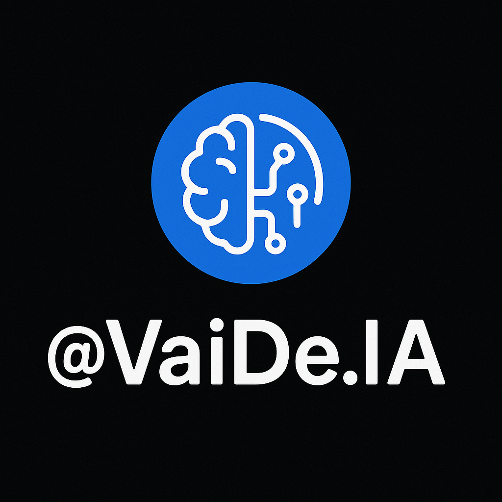

@VaiDe.IA
🧠Taskade – Organize suas tarefas com IA
🔧 Goblin Tools – Quebre tarefas complexas
🤖 Poe – Converse com vários bots de IA
⚙️ Bardeen – Automatize seu fluxo de trabalho
📚 Consensus – Leia artigos cientÃficos com IA
📄 AskYourPDF – Pergunte sobre PDFs
✍️ Writesonic – Textos com IA
📠Tactiq – Transcreva reuniões
🬠Fliki – VÃdeos com texto + IA